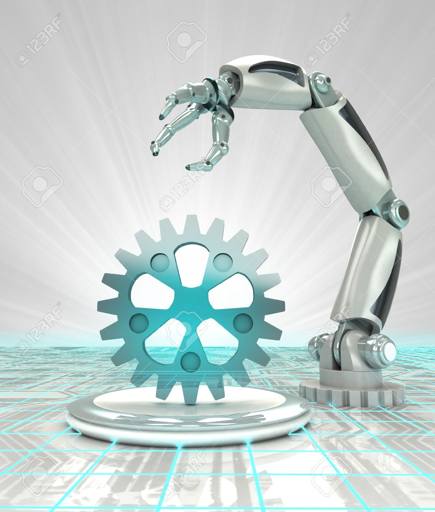

La Robótica

La creación y los origenes de la robótica
Los creación y los origenes de la robótica: El término robótica fue acuñado por Isaac Asimov, quien la definió como la ciencia que estudia a los robots. Asimov creó también las tres leyes de la robótica. En la ciencia ficción, el hombre ha imaginado a los robots visitando nuevos mundos, haciéndose con el poder o, simplemente, aliviándolo de las labores caseras
Cuando se creo la robótica y la causa por la cual se creo:
Creación de la robótica y su causa En Francia en el año 1801, el inventor Joseph Jacquard construye un telar automatizado controlado por medio de tarjetas perforadas, dando un salto en la intención de uso de las máquinas autómatas del entretenimiento a su uso industrial
Y la causa por la que se creo fue: Para evitar que los humanos realicen las tareas más pesadas, peligrosas y tediosas.
Tipos de robótica que existen y sus funciones:
Tipos de robótica: Robots industriales, Robots de servicio, Robots espaciales, Robots militares, Robots médicos
Funciones de cada tipo de robótica:Primera Generación: robots manipuladores,Segunda Generación: robots en aprendizaje,Tercera generación: robots reprogramables,Cuarta Generación: robots móviles,Quinta Generación: robots con inteligencia artificial.
Cuales son los usos más destacados de la robótica

Como aplicamos la robótica a nuestra vida:

{kind=link}
{kind=link}
{kind=link}
{kind=link}
{kind=link}
Habilidades que desarrolla la Robótica:
Aprneden el ensayo y el error, el propio autoaprendizaje y también el aprendizaje en grupo. Además, los niños aprenden a tolerar la frustración.
{kind=link}
Ponerse en contacto conmigo
Información Rellena los datos y enviame el mensaje con cualquier duda o información que necesites saber. Para ello rellena con tus datos y enviame es mensaje.
© Untitled. All rights reserved. Design:
HTML5 UP.